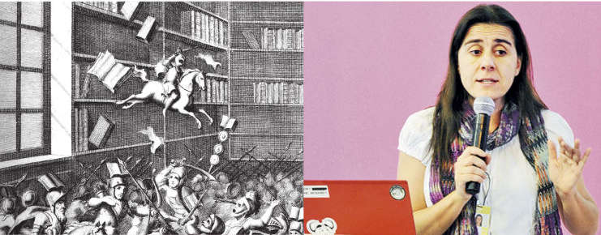

Beatriz Busaniche.
7 Oct 2016 20hs, Salón blanco Municipalidad de Río Cuarto.
Presentación a cargo de Lila Pagola y Javier Blanco.
¿Cómo compatibilizar el derecho de autor con el derecho de acceso y participación a la cultura que promueven y protegen diversos instrumentos de derechos humanos? El libro aborda esta cuestión a través de un estudio pormenorizado de los principales pactos de Derechos Humanos y tratados internacionales de propiedad intelectual. Adopta una perspectiva histórica para mostrar las discusiones, sumamente vigentes, que tuvieron lugar durante las negociaciones para incluir los derechos culturales en los instrumentos de derechos humanos. Analiza las tensiones entre el marco normativo de derechos humanos y los tratados comerciales. Brinda claves y propuestas para la construcción de una ley de derechos autorales que promueva el ejercicio de los derechos culturales.
- Autora: Beatriz Busaniche
- Editores: Fundación Vía Libre y Tren en movimiento, con el apoyo de la Fundación Heinrich Böll.
- Año de publicación: 2016
Se puede descargar libremente el libro en el siguiente link PIyDH_Busaniche
Organiza
Secretaría de Extensión
Programa de difusión y uso del Software Libre
Cátedra abierta Florial Gorini
Facultad de Ciencias Económicas (UNRC).